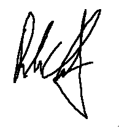

Dear Mr. Company,
I am pleased to apply for the DevOps position. With extensive experience in managing challenging
projects, making well-informed decisions in difficult situations, and solving complex problems
to save time and effort, I am confident that I can make a significant contribution.
Bringing over 26 years of professional expertise, I have dedicated 14 years to QA Engineering,
9 years as SysAdmin and Development, and an additional 3 years to DevOps Engineering.
My specialization lies in automating environments and improving software testing
and availability processes, encompassing Infrastructure as Code (IaC), Containerization,
Virtualization, Continuous Integration (CI), Continuous Deployment (CD), Scripting,
Programming, Database Management, and expertise in Monitoring and Observability environments.
Moreover, I played a pivotal role in three major international
projects, where my focus encompassed innovation, process automation, strategic planning,
workflow optimization, and cost reduction. I employed a comprehensive set of practices and
tools to integrate and automate the work of software development and IT operations (Ops),
aiming to improve and shorten the systems development life cycle.
I possess a keen sense of curiosity and a strong inclination towards automation, consistently
demonstrating a drive for learning. Committed to discovering the best and most efficient approaches
to completing projects, I have honed the ability to manage high-pressure situations and meet deadlines
effectively. My proficiency in time management has been consistently demonstrated. Moreover, I excel
as a team player, making positive contributions to collaborative environments.
For a comprehensive overview of my skills, experience, and background, please refer to both my linked
CV and Portfolio.
Sincerely,
Rubens Chagas
